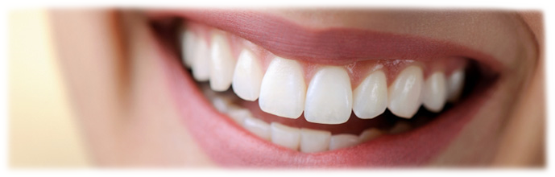
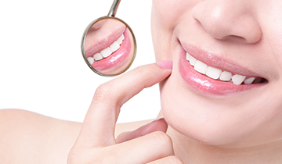
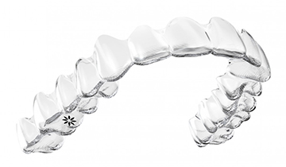
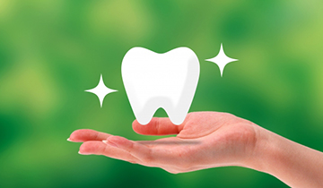

削らないで白く清潔感のある歯を

｢テレビのあの人みたいな
白くきれいな歯が欲しい｣
｢結婚式を控えているの
で歯を白くしたい｣
｢就職活動でより良い印象を｣
近年では芸能人に限らず審美面を重視した歯科治療へのニーズが高まってきており、
ホワイトニングもそのうちの一つです。
歯磨きや歯のクリーニングでは取りきれない歯の黄ばみはホワイトニング薬剤を使用することによって黄ばみの色素を分解することで、より明度の高い白くきれいな歯を手にすることができます。
当院では「安全に・早く・痛くない」ホワイトニングを受けることのできる歯科医院で行う「オフィスホワイトニング」と家庭で行う「ホームホワイトニング」を併用したデュアルホワイトニングを推奨しております。
オフィスホワイトニング
歯科医院で行うホワイトニングです。

歯の表面にホワイトニング薬剤をのせ、特殊な光をあてることにより歯を白くしていきます。
一回の施術で効果が高いため、短時間でホワイトニング効果を期待できます。
所要時間は約90分です。《薬剤の塗布→光の照射》の工程を3回繰り返し行います。
まれに施術中に痛みを感じる方がいらっしゃいますが、そのような症状が出た際には担当の歯科医の判断により適切な処置を行いますのでご安心ください。
ホームホワイトニング
ご自宅で行うホワイトニングです。

歯科医院にてご自身専用のマウスピースを作成し、ご自身でご自宅にてホワイトニングを行います。
マウスピースに専用の薬剤を注入し、一日4～6時間装着することでホワイトニング効果を期待できます。
ご自宅で手軽にホワイトニングをすることができますが、オフィスホワイトニングに比べると低濃度の薬剤を使用するため、効果が現れるまでに時間がかかります。しかし、色の白さを持続させる特徴があります。
デュアルホワイトニング
オフィスホワイトニングとホームホワイトニングを併用したホワイトニングです。

それぞれの長所を取り入れ、短所を補うことにより期間の短縮や、歯の白さの安定を図ることができます。
オフィスホワイトニングを一回行うことにより、歯はある程度白くなりますが、この白さを持続させるためにオフィスホワイトニング施術後、ご自宅でホームホワイトニングを行うことにより、より一層明るく白い歯を手に入れることができ、なおかつ歯の白さを持続させることが可能となります
オフィスホワイトニングを２回以上行うことにより、より高い効果を期待できます。
ホワイトニングについてよくある質問
Qホワイトニングとクリーニングの違いは何ですか？
Aホワイトニングは薬剤を使用することにより、歯の内部を白く(漂白)していくことにより、歯の色自体を明るく白くしていきます。クリーニングは歯の表面についた着色(茶渋やタバコのヤニなど)をブラシやシリコンカップなどを使用し取り除いてあげることにより、歯をきれいにしていきます。歯の色が気になる場合は、クリーニングを受けて歯の表面の汚れをキレイにしてから、ホワイトニングされることをおすすめします。
Q痛みはありますか？
Aホワイトニングは薬剤を歯の中に浸透させて脱色させ、白くしていきますので一時的な知覚過敏の症状が出ることがあります。その方のエナメル質の厚みも違いますので、症状が出る方もいれば出ない方もいます。万が一、症状が出てしまっても一時的な反応ですのでご安心ください。
Qどのような人でもホワイトニングはできますか？
A先天代謝異常症候群や無カタラーゼ症、妊産婦の方はホワイトニングを行うことができません。矯正治療中の方で、歯の表面にブラケット装置がついている方もホワイトニングを行うことができません。知覚過敏の症状がひどい方も避けられたほうがいいと思いますが、一度担当医にご相談ください。
Qホワイトニングによって虫歯になりやすくなりませんか？
Aホワイトニングによって歯が弱くなったり虫歯になったりすることはありません。ホワイトニング薬剤の主成分である過酸化水素や過酸化尿素は、熱などによって活性化されると酸素と水に分解されます。この分解された酸素が、歯の内部にある色素と結びついて着色物質を無色透明にすることにより歯を明るく白くしていきます。ホワイトニングを行っても歯の内部の構造が変わるわけではありませんので、虫歯になったり歯が弱くなったりすることはありません。